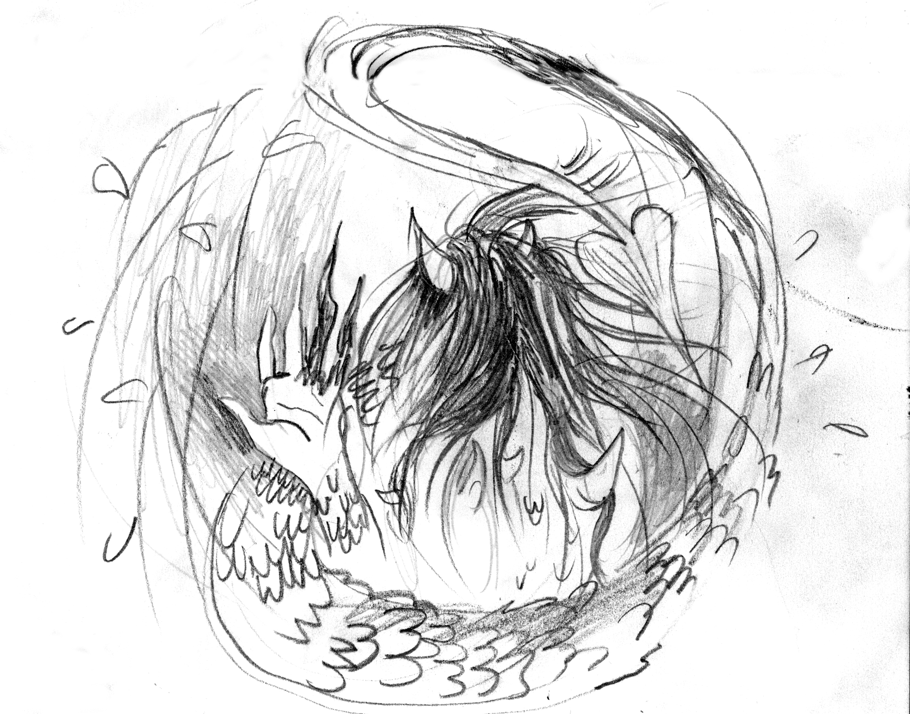

Once upon a time, there was a girl who aspired to be a hero who fights dragons and protects those in need. She told her parents her wish and they were very glad that she had such a noble goal. With their support, she travelled to the nearest kingdom-which was actually very far away. There, she received training at the School of Hero Advancement and Mastery. She studied swordsmanship, chivalry, and general military arts diligently. Knowing she wouldn't become a legend remembered for ages, she still mastered all the skills that made her a good dragon fighter.
On the eve of her induction, she had to complete her senior mission with her designated partner, a friend who had gone through similar training. They followed the trail of a dragon that had just returned to its lair after raiding a village. At first, her friend was afraid to enter because the large rocks clustered above the entrance could fall and trap them inside. Then she remembered the treasures awaiting inside and gathered her courage. When the two apprentice heroes stealthily entered the cave, they found the old dragon asleep surrounded by enormous piles of treasure, enough to support countless people for generations. The old dragon slept so soundly that it did not notice the two intruders. They approached quietly and killed it in its sleep.
The two apprentice heroes were now left alone with the treasure. The friend's eyes glistened as she proposed: "This old dragon probably raided hundreds of villages to gather this stash of treasure. There's no point in carrying it all back to a village that could never spend it all. Why don't we return what they lost and keep the rest here? This place is safe and well-hidden. We can come back for what we deserve in the future."
The girl was hesitant and responded, "There are others who can use this gold. It isn't right to keep it away from anyone in need."
Her friend insisted, "The people who sent us here will get what belongs to them, but there's no way to return the rest of the treasure. Besides, how can we survive if our only reward is gratitude?"
The girl noticed that as her friend spoke, horns began to sprout from her head, then hands pointed into claws, a tail with spikes grew out, and scales spread over every inch of her body. The girl froze in shock. She knew that as they now stood, hero and dragon, she would have to kill her friend. But, she couldn't draw her sword. So she fled before the wings of the new cave-owner grew out, leaving behind the stolen treasure.
The girl returned to the kingdom and warned the other heroes-in-training about her friend's transformation, but no one believed her. Everyone thought she was so traumatized by failing her mission and losing her friend that she made up the story. She wrote to her parents expressing how much she wanted to go home instead of turning into a dragon someday. Her parents didn't understand a word of her letter.
Despite everyone's disbelief, she lived in fear of turning into her own greatest enemy. She packed up her sword and shield, and brought them back to her mentor. When she removed her armor with all due ceremony, she noticed a patch of her skin covered with scales. Worse, her mentor noticed, yet she was calm and unmoved when she asked, "Is that why you wish to surrender your sword?"
The girl nodded and told everything to her mentor, who responded, "To reverse this, you must retrieve three items: a reward no family wants, an everlasting flower that everyone loves, and a weapon that defeats the enemy without killing. There will be dangerous challenges requiring the usual bravery and skills, so you might want to keep that sword and shield. This would be perfectly acceptable as a substitute for your final challenge."
Upon learning what could prevent her transformation, the girl didn't dawdle. She thanked her mentor and left the kingdom to search for the three items.
After a few days of journeying out into the world, she arrived at a village funeral. She approached the family after the ceremony and found out that a young hero had died fighting a dragon. She expressed her condolences to the parents, adding that, as a hero-in-training, she felt their loss personally. The grief-stricken mother held forth an intricately carved box and opened it to reveal a bright gold disk suspended from a silk ribbon, saying, "They granted us this medal as a reward for his bravery, but there is no reward for burying your own child. We just want him back."
As her husband stood downcast, the pained woman slowly tilted her outstretched hand, letting the medal slip to the ground, and the box falling beside it. "But you cannot give me back my child, just as I could not stop him from wanting to be a hero. So, let me keep alive the memory of my son-and you can keep your medals."
The girl bent down to pick the medal from the ground. But, before she could thank them, the family had moved on. In a respectful silence, she left, determined to find the next of her three objects-the flower.
For the next few days, the girl tried all of the flowers she knew, but there was always someone who disliked them: roses pricked painfully, tiger lilies stank pungently, orchids looked scary. Not to mention the fact that she needed it to be everlasting. She eventually stopped at a village to restock on supplies before continuing her journey. She saw a sign in front of the village bakery that read, "Fresh Bread and Cookies that Bring Everlasting Happiness-Everyone's All-Time Favorites." The girl found the advertisement intriguing, so she went inside. She had to battle her way through the throngs of patrons shouting out their orders before greeting the baker. She told him about the flower she was looking for and laughed at how much his sign resembled the description.
The baker responded, "I don't think you can say that any flower is everlasting. Flour, on the other hand, lasts a very long time, and everyone loves my baked goods because the happiness they bring lasts even longer! It sounds like making flower-shaped cookies makes more sense than trying to find what you described."
The girl thought about what the baker said and found the idea of making a flower-shaped cookie convincing. She asked the baker if he would accept her special order of flower-shaped cookies and he happily agreed. He went on, however, saying that he lacked the flour needed because patrons place special orders the night before, so she would have to procure her own. He said that she could find the best flour from the mill on the other side of town. She went there and brought back a bag of the lightest, most refined flour. Delighted, the baker used the flour to make cookies that she asked for.
The smell of baking was so delicious that everyone who walked by the bakery stopped and asked what was being made in the oven. They were awestruck at how much the cookies looked like real flowers. The girl and the baker gave out all of the flower cookies, except one, to the villagers, who moaned and sighed and yelped as they chewed. The girl was relieved to see that everyone left satisfied. She thanked the baker, packed the last flower-shaped cookie, and marched on, determined to find her third object.
The girl arrived and proceeded to the town square as it seemed to be a market day. At the center was a monumental stump, into which was firmly embedded a handsome battle-axe. She stopped one of the townspeople to ask why there was an axe in the middle of the plaza. He said proudly, "It was left by the legendary axeman born and bred in this town. It has bathed in so much dragon blood that even decades after the hero died, this axe still scares dragons away and protects us. It is the most important symbol of our town!"
Just as he was finishing up the story, a familiar shadow swept over the plaza. A tremendous tail started swinging, destroying whole buildings. The girl quickly drew her sword and told the people to find shelter. When she took a better look at the dragon, she found it oddly familiar, especially its glistening eyes-her friend had fully transformed and grown much larger than their last encounter. The girl knew she should focus on saving the town instead of worrying about reversing her own spreading dragon curse. She gripped her sword a little tighter and charged forward.
The girl yelled at the dragon in hopes of getting its attention, but her voice was muffled by the screams of frightened townspeople. The dragon took another swing with its tail, but this time it hit the girl. Luckily, she was not badly injured, but her sword broke upon impact. She knew she couldn't win without a weapon, so she ran back to the plaza and found the axe intact. She began to pry the battle-axe from its stump, anchoring her feet to pull the handle. As she tugged, a fleeing townsman yelled in panic, "It was supposed to protect us! But it cannot kill a thing!"
The man fled the plaza as fast as he could, leaving the girl to dislodge the failed town talisman. She picked up the axe and thought about how she could lead the dragon away from the town. She took out the medal and waved it to get the dragon's attention, and the glint of gold immediately caught its greedy glance. She skillfully mounted a horse galloping her way and coursed away from the town plaza with the dragon following her.
Determined to prevent the destruction of any other villages, the girl rode through the forest, which provided her cover. She made her way back to the dragon's den. The dragon's great girth gave it immense strength, but slowed it down considerably, so it trailed far behind. When she reached the cave, she dismounted and let the horse go free. She noticed some poppy flowers growing near the entrance, which she crushed and sprinkled on the flower-shaped cookie to buy herself more time. She left the cookie and the gold medal inside, and hid in the surrounding woods. When the dragon returned, it found the gold medal and the cookie on the ground. It happily tossed the medal to its pile of treasure, and ate the cookie as a treat. It wasn't long until the dragon fell asleep, intoxicated and exhausted, and the girl came out of the woods. The girl used the axe to cut down the tallest trees above the cave. The falling trees dislodged the overhanging rocks, causing a landslide that blocked the entrance and trapped the dragon inside forever.
The girl, exhausted, took off her armor and found that the dragon scales on her skin had disappeared. She returned to her home village and left the axe with her parents. She stayed home for a few days. Then, she wandered off on another journey, and no one ever heard from her again.
Dark Mode!